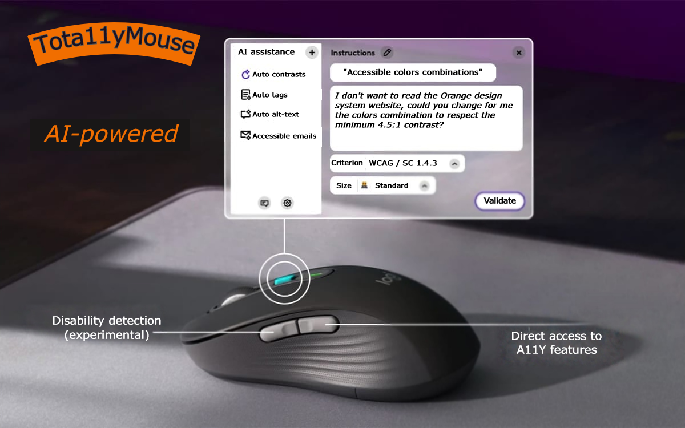

Tota11yMouse
Associated themes:- Web
Publication date
Introduction #
A few weeks ago, Orange announced a partnership with Mistral AI to accelerate the development of Artificial Intelligence (AI) in Europe.
In the field of accessibility, the expert community is formal: AI is going to revolutionize our businesses, and websites will, without a doubt, be 100% accessible within 2 or 3 years (see links at the end of the article).
Today, it's time for us to unveil an innovation: for months and in the greatest secrecy, the Orange Digital Accessibility Expertise Center team and XDLAB ergonomists have been developing an “AI-powered” mouse to help Orange designers and developers create accessible web products and services, without having the necessary knowledge.
We present you Tota11yMouse, the mouse of the future!
What is this innovation in detail? #
Visually, you might think it's a mouse like any other, but the innovation lies in its direct shortcuts to accessibility features from the side buttons, but also in its ability to detect the user's disabilities.

Direct access to accessibility features #
A side button allows you to activate accessibility features on the element targeted by the mouse pointer.
No more spending hours looking for the appropriate HTML tag or attribute; detection is automatic based on the context of the page and the elements surrounding the component.
For example, a form label will automatically be attached to its form field using the label tag and the for attribute pointing to the input field's ID.
In addition to semantic tagging, it will also be possible to automatically correct the color contrast of texts.
No more white text on an orange background (or vice versa) that provides insufficient contrast, even when using the so-called "accessible" orange. With a single click, the texts will turn black to allow all users to read comfortably.
Another innovation addresses the main source of errors on websites, namely image alternatives.
Thanks to this mouse, the image will be automatically analyzed by the integrated AI and a relevant alternative will be provided with 90% reliability (tests conducted with a sample of 28 blind users).
Finally, since writing emails or PowerPoint documents is a daily activity at Orange, we have also integrated Microsoft's accessibility inspector directly into the shortcut options, so you no longer have to search for the "Check Accessibility" button in the "Review" menu yourself.
Experimental Innovation #
As you can see in the image, a second side button will allow users to go even further in assistance by automatically detecting the user's disability.
This feature is still experimental, but we can already reveal the main principles:
- The mouse will have micro-sensors capable of interpreting the slightest tremors or slowness of the hand.
- The PC camera will analyze the eyes and facial expressions to detect blindness or comprehension difficulties and will send the information to the mouse, which will adjust the settings accordingly.
Testimonials #
Here is some feedback from our beta testers:
The mouse is comfortable to use, and I save a lot of time on page development. However, the mouse pointer is too small, so I have to make long movements, which hurts my wrist.
When the mouse detects an image, the Tota11yMouse starts to vibrate. A long vibration indicates that the AI is working on generating the image alternative. Once it's done, you can hear "Meow, Meow" from the computer speakers, announcing the vocalization of the image alternative.
When is the official release? #
As you may have guessed, all of this is pure fiction because artificial intelligence, despite what you may hear, does not make your sites accessible.
For Orange's websites and mobile applications to comply with accessibility requirements (RGAA or WCAG), the only recognized method to date is:
- Get trained,
- Follow standards and our recommendations,
- Test your deliverables, notably using our "essential" checklists available for Web, Android, iOS, and documentation,
- Conduct user tests.
Some resources #
Interesting reflections on the subject: